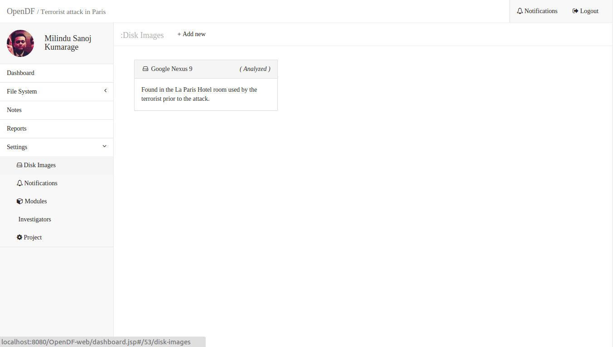

What is OpenDF?
OpenDF is a digital forensic tool used to investigate cyber crimes. In a world where cyber crimes are becoming more and more frequent, the importance of a powerful tool wich enables one to gather evidence easily is growing. OpenDF aims to be a powerful digital forensics tool which has the power to enable investigators to solve cyber crimes more effectively
Technologies Used
Java EE
EJB
JMS
JPS
JAX-RS
JNI
JAXB
MySQL
Bootstrap
AngularJS
Why one should contribute?
Today, open source softwares play an instrumental part in the world. These softwares insure that in a corporate-minded universe there are still some products which aim to keep some products free and promote a community minded development. OpenDF aims to be one of these softwares which is a widely used open source platform for investigators.
As a budding developer myself, I am intrigued by the world of 'Github' and other open source platforms. I personally think that by allowing people to contibute on softwares as a community would ensure widespread creativity and innovation. By contributing to OpenDF, one can be a part of this community and play a vital role in the development of a great product.
 OpenDF in action.Learn More.
Find out more about OpenDF at http://www.scorelab.org/OpenDF/
Find thier github repository at https://github.com/scorelab/OpenDF/